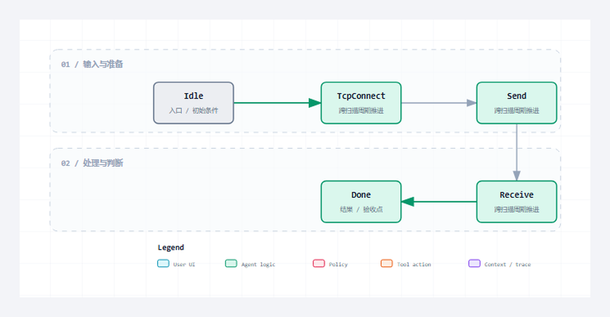

先用固定地址、固定路径、无 Body GET 和短连接跑通 Client 最小闭环，明确 Execute、Connect、Send、Receive、Done 各自代表什么。
适合谁收藏
- 正在让 PLC 主动访问 HTTP 服务的工程师。
- 需要处理请求构造、响应边界、超时与连接复用的人。
- 希望把 Client 故障定位到确定状态和错误出口的读者。
客户端篇，第 1/7 篇；主系列第 12/28 篇。
现场问题
Client 最容易出现的误判，是连接句柄一建立就认为请求成功。实际上此时还没有构造请求、没有发送字节，更没有收到状态码和 Body。
第一笔请求只访问一个已知服务的 /api/ping。它不追求复杂功能，只用最少变量证明 PLC 能主动完成完整 HTTP 事务。
先给结论
最小 Client 的成功条件是状态从 Idle 依次经过 TcpConnect、Send、Receive 到 Done，输出合法状态码和完整 Body。Connect 成功、Write 完成和 HTTP Done 是三个不同证据。

读图重点
这张图只压缩本篇的判断路径。读图时先找“Execute 上升沿”对应的输入边界，再沿着“Parser 确认响应完整”检查状态怎样推进，最后用“状态码、Header 和 Body 可消费”确认输出是否已经形成验收证据。
把对象和边界分开
| 对象或阶段 | 工程职责 | 现场观察点 |
|---|---|---|
| Execute 上升沿 | 锁存本次请求参数 | 事务只启动一次 |
| TcpConnect | 建立到目标 IP 与端口的通道 | 句柄有效但请求尚未成功 |
| Send / Receive | 发送请求并累积响应 | Tx/Rx 长度持续推进 |
| Done | Parser 确认响应完整 | 状态码、Header 和 Body 可消费 |
从协议约束到代码职责
协议约束
最小 Client 的成功条件是状态从 Idle 依次经过 TcpConnect、Send、Receive 到 Done，输出合法状态码和完整 Body。Connect 成功、Write 完成和 HTTP Done 是三个不同证据。 这条结论先限定消息什么时候成立，再限定哪个角色可以消费结果。若绕过协议边界直接驱动业务，半包、超时、重复执行和连接残留就会进入应用层。
工程抽象
首个 Client 用例固定使用 GET、短连接和短文本响应。固定条件能把地址错误、请求构造错误、发送错误和响应解析错误逐层暴露，而不是让 JSON、认证或业务动作干扰判断。
xExecute 只是启动命令，FB 仍需每扫描周期调用。Done 也应作为一次事务结果被上层消费，下一次请求开始前必须清理接收缓冲、偏移、超时和完成脉冲。
- Execute 上升沿：工程职责是“锁存本次请求参数”。它不能只停留在命名层面，运行时必须能通过“事务只启动一次”观察到输入、状态或结果；否则这一层即使有代码，也没有形成可验证边界。
- TcpConnect：工程职责是“建立到目标 IP 与端口的通道”。它不能只停留在命名层面，运行时必须能通过“句柄有效但请求尚未成功”观察到输入、状态或结果；否则这一层即使有代码，也没有形成可验证边界。
- Send / Receive：工程职责是“发送请求并累积响应”。它不能只停留在命名层面，运行时必须能通过“Tx/Rx 长度持续推进”观察到输入、状态或结果；否则这一层即使有代码，也没有形成可验证边界。
- Done：工程职责是“Parser 确认响应完整”。它不能只停留在命名层面，运行时必须能通过“状态码、Header 和 Body 可消费”观察到输入、状态或结果；否则这一层即使有代码，也没有形成可验证边界。
程序单元
本篇主证据来自 PLC_PRG.st 中以 fbHttpClient( 为定位点的连续源码。这里不是为了展示语法，而是把协议约束落到确定程序单元：输入先进入结构体或缓冲区，状态机只在本周期处理可确认的部分，长度和结束条件决定能否前进，错误码与指标负责把失败原因带出对象边界。这样一来，“Connect 成功不等于 HTTP 成功。”可以在代码、在线变量和外部报文之间逐项对照，而不是依赖经验猜测。
本篇核心源码片段
下面两段代码来自同一个真实文件 PLC_PRG.st，以 fbHttpClient( 为中心连续截取，没有改写变量、删除分支或用伪代码替代。第一段用于确认入口与前置条件，第二段用于确认状态、边界和输出。核对时重点看“锁存本次请求参数”怎样进入对象，以及“状态码、Header 和 Body 可消费”怎样证明本次处理已经结束。若两段之间的连续关系无法解释“只有完整响应进入 Done 才能交给应用。”，就不能把局部代码截图当成实现证据。
片段一：入口、声明与前置条件
sRxMessage => GVL_HttpRealTest.sServerRxMessage,
sTxMessage => GVL_HttpRealTest.sServerTxMessage,
sLastTarget => GVL_HttpRealTest.sServerLastTarget,
sLastBody => GVL_HttpRealTest.sServerLastBody,
hListenHandle => GVL_HttpRealTest.hServerListenHandle,
aConnectionSnapshots => aServerSnapshots
);
fbHttpClient(
xEnable := GVL_HttpRealTest.bClientEnable,
xExecute := GVL_HttpRealTest.bClientSend,
xReset := GVL_HttpRealTest.bResetResults,
xAbort := GVL_HttpRealTest.bClientAbort,
xCloseConnection := GVL_HttpRealTest.bClientCloseConnection,
bEnable := GVL_HttpRealTest.bClientEnable,
bSend := GVL_HttpRealTest.bClientSend,
udiTimeOut := GVL_HttpRealTest.udiClientTimeoutUs,
sURL := GVL_HttpRealTest.sClientURL,
sServerIP := GVL_HttpRealTest.sClientServerIP,
uiPort := GVL_HttpRealTest.uiClientPort,
sHost := GVL_HttpRealTest.sClientHost,
sPath := GVL_HttpRealTest.sClientPath,
eRequestType := GVL_HttpRealTest.eClientMethod,
eMethod := GVL_HttpRealTest.eClientMethod,
sBody := GVL_HttpRealTest.sClientBody,
sContentType := GVL_HttpRealTest.sClientContentType,
sAdditionalHeader := GVL_HttpRealTest.sClientAdditionalHeader,
udiNowMs := GVL_HttpRealTest.udiNowMs,
xActive => GVL_HttpRealTest.bClientTcpConnected,
xConnected => GVL_HttpRealTest.bClientTcpConnected,
xBusy => GVL_HttpRealTest.bClientBusy,
xDone => GVL_HttpRealTest.bClientDone,
xError => GVL_HttpRealTest.bClientError,
bTcpConnected => GVL_HttpRealTest.bClientTcpConnected,
bBusy => GVL_HttpRealTest.bClientBusy,
bDone => GVL_HttpRealTest.bClientDone,
bError => GVL_HttpRealTest.bClientError,这一段先回答对象在什么输入和状态下开始工作。阅读时要核对变量的初值、长度上限和启动条件，不能只看某个布尔量是否变成 TRUE。
片段二：状态推进、边界与输出
diErrorID => GVL_HttpRealTest.diClientErrorID,
sDiagMsg => GVL_HttpRealTest.sClientDiagMsg,
eLastNbsError => GVL_HttpRealTest.eClientLastNbsError,
eState => GVL_HttpRealTest.eClientState,
eLastError => GVL_HttpRealTest.eClientLastError,
uiStatusCode => GVL_HttpRealTest.uiClientStatusCode,
sTxMessage => GVL_HttpRealTest.sClientTxMessage,
sRxMessage => GVL_HttpRealTest.sClientRxMessage,
sResponseBody => GVL_HttpRealTest.sClientResponseBody,
sResponseHeader => GVL_HttpRealTest.sClientResponseHeader,
stMetrics => stClientMetrics,
stResponse => stClientResponse
);
IF GVL_HttpRealTest.bClientSend THEN
GVL_HttpRealTest.bClientSend := FALSE;
END_IF
IF GVL_HttpRealTest.bClientAbort THEN
GVL_HttpRealTest.bClientAbort := FALSE;
END_IF
IF GVL_HttpRealTest.bResetResults THEN
GVL_HttpRealTest.bResetResults := FALSE;
END_IF
GVL_HttpRealTest.udiServerAcceptedCount := stServerMetrics.udiAcceptedConnections;
GVL_HttpRealTest.udiServerRequestCount := stServerMetrics.udiRequestCount;
GVL_HttpRealTest.udiServerResponseCount := stServerMetrics.udiResponseCount;
GVL_HttpRealTest.udiServerProtocolErrorCount := stServerMetrics.udiProtocolErrorCount;
GVL_HttpRealTest.udiClientRequestCount := stClientMetrics.udiRequestCount;
GVL_HttpRealTest.udiClientResponseCount := stClientMetrics.udiResponseCount;
GVL_HttpRealTest.udiClientConnectErrorCount := stClientMetrics.udiConnectErrorCount;
GVL_HttpRealTest.udiClientProtocolErrorCount := stClientMetrics.udiProtocolErrorCount;
GVL_HttpRealTest.sClientReason := stClientResponse.sReason;
IF (GVL_HttpRealTest.udiServerRequestCount > 0)第二段继续展示同一连续源码范围。把它与第一段合起来，才能判断输入怎样被锁存、状态何时推进、边界何时满足，以及错误出口是否保留了足够诊断信息。
验证路径
| 场景 | 操作 | 通过口径 |
|---|---|---|
| 正常 GET | 访问已知 /api/ping | 状态码 200，Body 完整 |
| 端口拒绝 | 改为无监听端口 | 停在连接层并保留 NBS 错误 |
| 合法 404 | 请求不存在路径 | 事务完成，业务状态码保留 |
| 再次执行 | 复位后重复 GET | 旧响应和旧错误不残留 |
场景 1：正常 GET
把目标固定为已知可用的 /api/ping，从启动脉冲开始观察 Client 的连接、发送、接收和完成状态。外部服务返回 200 只是第一层；还要确认 PLC 保存的状态码、Body 长度和 Done 在同一事务里出现，且下一周期不会重复触发。这样能把“第一次 GET 成功”与“碰巧收到了一个字符串”区分开。
场景 2：端口拒绝
把端口改为一个没有监听服务的值，确认 Client 在 TCP 建连阶段超时或拒绝，而不是误报 HTTP 解析失败。错误码应来自连接层，响应缓冲区必须保持为空，复位后能立即重新发起一次正常请求。这个场景证明网络故障和 HTTP 业务失败被分开处理，排障时不会沿错方向查报文。
场景 3：合法 404
请求一个服务端明确不存在的 URI，预期 TCP 和 HTTP 事务正常结束，但业务结果为 404。PLC 侧应保留完整状态码和响应 Body，同时把传输完成与业务失败分别表达；若 404 被直接映射成 Client Error，调用方就无法判断是地址写错还是链路断开。验收重点正是这两个层次不能混在一个布尔量里。
场景 4：再次执行
先完成一次成功 GET，再复位并切换到另一条路径重新执行。第二次结果必须覆盖第一次的状态、Body 和诊断，不能因旧 Done 脉冲或旧错误码而提前结束。建议把两次请求的序号和返回内容同时放到在线监视表中；只有它们一一对应，Client 才具备在循环程序里反复使用的条件。
常见误判
- 连接句柄一建立就置位 Done，应用拿到的状态码仍是 0。
- Execute 保持 TRUE 导致同一请求被反复触发。
- 第一次请求完成后不清理 Rx/Tx 偏移和超时，第二次请求被旧状态污染。
这些误判的共同点，是拿一个局部现象替代完整事务。定位时必须回到本篇的输入、状态、边界和输出四个坐标，并用相同输入完成回归。
这一篇你最该记住
- Connect 成功不等于 HTTP 成功。
- Execute 触发事务，周期调用推进事务。
- 只有完整响应进入 Done 才能交给应用。
系列导航
- 系列：CodeSys HTTP 系列教程，第 12/28 篇。
- 阶段：客户端篇，职责线位置 1/7。
- 上一篇：第11篇
- 下一篇：第13篇
- 发布顺序：基础认知 -> Server -> Client -> 完整源码加更 -> 综合收束。
评论区预留
这里先保留评论和回复结构，不接入第三方服务。后续统一决定登录、匿名、审核、反垃圾和静态站兼容策略。